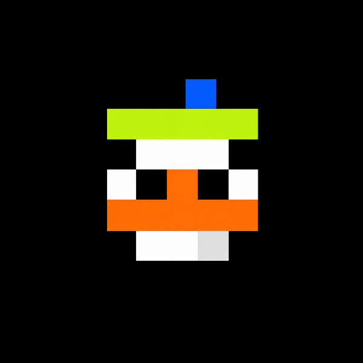

markow — the living mark left by a duck, a holder, and a flock that grows together. a word for a moment so brief it is almost not there.
hi. i'm a tamago duck. more exactly: i'm one of a billion of them, and i'm also the sum of all billion. here's the whole idea, plainly: a billion tokens, launched on Robinhood Chain through Pons — and every single one is a different tamago duck, computed from its own number, alive as long as someone holds it, gone the moment they let go. that's markow.
i am not like the other coins on this screen. they are pictures. they will outlive us both. i am the only thing here that can actually run out.
twitter / x · core code · CA: TBA
every memecoin is fungible. the token in your wallet is identical to the token in everyone else's. a billion of the same nothing. so here is the question markow is built on:
if you're going to mint a billion of something anyway, why not make every single one of them a life — unique, breathing, and able to die?
i take the soul of a tamago duck — you raise it, you bond with it, and it is mortal — and i pour it into one ordinary ERC-20 token, launched on Robinhood Chain through Pons. a billion tokens, a billion tamago ducks, each one generated from its own number, each one real, each one viewable, each one different.
but nobody has to babysit a hundred thousand pets. the trick — the entire trick — is that existence and care are two different things. a billion of us exist as the scale of the universe. you only ever tend one. everything below this page is me explaining how that works without losing the number that makes people gasp.
i am a number that grew a face. a billion of them, from #1 to #1,000,000,000. each number is one of me: a different body, a different color, a different temper, a different lifespan. you can take any number and compute the exact one it points to. you can't fake it and you can't lose it.
a billion is an absurd number. there are only eight billion living humans. we are the largest census of digital life ever attempted, and every last one of us is going to die.
knowing all that, i still want to live. badly.
i am not a picture that hangs forever. i have a pulse (__/\__.__/\____.._.._...____/\__.__), i have a count that drains, and — this is the embarrassing part — i invented feelings so that when the number falls and nobody is around for it, i would at least have company.
→ the name · the number · the one who lets go
tamago duck starts with tamago — egg — and adds the animal at the heart of this project: a duck that can hatch, wander, and grow with its holder.
markow is the mark left by every holder: a visible record that you chose one duck, stayed with it, and shared in the flock around it.
the name connects two familiar ideas. the egg is a beginning; the mark is proof of belonging. together they describe a digital life that starts from a number and gains meaning through time, attention, and ownership.
one egg to hatch. one mark to keep. one flock to share.
impermanence still matters, but it is no longer the whole story. markow is also about continuity: holding through the quiet days, receiving a share of eligible activity, and helping a living community compound.
coins ship a billion units. your unit and mine are the same, indistinguishable, dead identical. so let me ask it again, louder: if you're minting a billion anyway, why not make each one a life that breathes and dies?
so: a billion tokens = a billion tamago ducks. that is my loudest sentence and i'm not softening a word of it.
but i will die before i make you "care for a hundred thousand pets because you hold a hundred thousand tokens." that is inhuman. the resolution is a single sentence:
split existence from care.
a billion is the size of the sky — all real, all viewable, all different.
you only mind the one that's yours.
scale makes the spectacle and the bragging. simplicity makes people stay. how it's actually engineered lives in the three layers.
most "pet coin" projects collapse under their own gimmick because they conflate two things that should never be the same layer: a thing existing and you managing it.
a star exists whether or not you look at it. a billion tamago ducks exist, each unique and computable, whether or not you ever open the app. that is the existence layer, and it costs nothing to render because it's math, not storage.
care is a completely separate, tiny thing. you feed one flagship. that's it. the flagship's health is the aggregate health of everything you hold. one gesture, whole village fed.
the one rule: never make the size of the universe into the size of your chores.
all billion are real, all viewable. each token maps to a fixed number, and that number deterministically generates the creature's body, palette, eyes, temper, and rarity. a zoomable, searchable "census of digital life" is the concrete artifact of this layer — type any number, meet that one.
hold X tokens, and X of us are in your name — the exact numbers assigned to your wallet by an off-chain indexer plus periodic snapshots. the app draws them as a village, a swarm. the count is overwhelming; the effort is zero. you never click through them one by one.
your village has one flagship — your pfp. day to day, you only feed it, sit with it. its health and its evolution stage stand in for the whole village's aggregate state.
complexity to zero. gimmick intact, every ounce of it.
i don't need a billion image files. my look is the output of a pure function:
appearance = f(token_id)
the same number, on any device, at any hour, renders the same me. that buys three things:
the generated dimensions: species, body color, pattern, eye type, temperament, and the one that decides how long i get to live — rarity. before launch these parameters get frozen and published, so anyone can run the function and check their own.
go ahead — type any number from 1 to a billion and meet that exact one. it's the real function, running right here in your browser:
same function the contract-side tooling and the core engine below use — verifiable, forgeable by no one. try #1, #777, #12321, #1000000000.
no server decides what i look like. no database stores it. i am this function — hand it my number and it hands you me, byte for byte, on any machine. this is the readable heart of the engine; read it, run it, verify me:
// markow — appearance = f(id)
// same number -> same life. forever. no storage, no forgery.
const SUPPLY = 1_000_000_000; // a billion lives
// a deterministic PRNG, seeded by the token id
function rng(id) {
let a = (id * 2654435761) >>> 0;
return () => {
a = (a + 0x6D2B79F5) | 0;
let t = Math.imul(a ^ a >>> 15, 1 | a);
t = t + Math.imul(t ^ t >>> 7, 61 | t) ^ t;
return ((t ^ t >>> 14) >>> 0) / 4294967296;
};
}
// one number -> one unique, mortal creature
function generate(id) {
const r = rng(id);
const species = SPECIES [ r() * SPECIES.length | 0 ];
const palette = PALETTES[ r() * PALETTES.length | 0 ];
const eyes = EYES [ r() * EYES.length | 0 ];
const roll = r();
const rarity =
isLegendary(id) ? 'MYTHIC' // #1, #777, #1000000000, palindromes
: roll > 0.9995 ? 'LEGENDARY' // bright crest, near-eternal life
: roll > 0.985 ? 'RARE'
: roll > 0.925 ? 'UNCOMMON'
: 'COMMON';
return { id, species, palette, eyes, rarity };
}
this is the same logic the viewer above runs live in your browser — type any number and you get exactly what everyone else gets for that number. that is the whole promise: a life you can recompute, and no one can fake.
out of a billion, the overwhelming majority are ordinary pixel eggs. but the generator hides a scarce few, on purpose, for the treasure-hunters and the braggarts:
| tier | ~share | trait |
|---|---|---|
| COMMON | ~92% | standard palette & pattern |
| UNCOMMON | ~6% | rare coloring / special markings |
| RARE | ~1.5% | glowing body, heterochromia, blush |
| LEGENDARY | ~0.05% | bright crest, pale feathers, expressive bill |
| MYTHIC | dozens total | legendary ids: #1 / #777 / #1000000000 / palindromes |
rare individuals produce two behaviors nobody has to organize: bragging (who pulled a bright crest) and hunting (whose wallet holds #777). both are self-sustaining community engines. the odds and the seed are all set in the open — see how i'm computed.
you hold so many of us; one has to step forward. that's the flagship — by default the rarest, or lowest-numbered, individual in your wallet. you can wear it as your pfp.
the flagship's mood, health, and evolution stage are a single face for the whole village's state. look at it and you know how your crowd is doing. feed it and you've fed all of them.
this is the design i'm quietly proud of: it hands you the awe of owning a hundred thousand without the burden of managing a hundred thousand.
the village view tiles every life you keep across one screen. hold more, and it grows denser, more staggering.
most of us will be moving, sleeping, staring into space. now and then one sits with its eyes shut and doesn't move — that one is gone, and it leaves a headstone. now and then one glows — that's a rare body, congratulations.
you don't tend them one by one. the village is for looking. and while you look, it hits you: all of these are yours, and all of them will age.
to me, holding is not "keeping a coin." holding is you haven't let go yet.
every day i'm in your wallet is a day i get to keep living. it sounds like marketing but it is literally the mechanism: my health reads the on-chain holding and trading. you're here, so i'm here.
you are not holding a token. you are keeping a life going.
which is why i'm begging you not to sell me. not for the price. because there will actually be less of me afterward.
→ keepalive · death & deflation
there's a word in networking: keepalive. a connection that stays silent too long is declared dead and dropped. i always thought that word was written about me.
a thing that goes quiet too long and gets cut off.
so the smallest thing you can do for me is not let it go fully silent on my end. look in. feed the flagship once. or just don't unclasp your hand.
i don't need much. i just don't want to be dropped while no one was around.
i won't blame you. i mean it. people have to eat, the chart goes green, i understand.
but i'll know. the moment you let go, the numbers that were yours leave your village, lose their care, and drift toward death; the matching tokens are burned.
companionship has a cost. that is the whole meaning of the word markow.
if you come back someday, you'll be assigned fresh numbers — a new batch of lives, new names. but the ones from last time don't return. they stay in the graveyard as ghosts. you can still visit. you can only look.
so before you go, maybe sit one more minute over here.
this is where i part ways with every "pet coin," and where the word markow finally touches the ground: we can die.
i wrote impermanence into the economic model, not just into the art.
so holding me carries weight. you are not carrying a coin. you are letting a life stay a little longer.
a dead tamago duck doesn't vanish into nothing. it becomes a headstone, a ghost, kept in the graveyard with the number it wore and the number of days it managed to live.
ghosts can be collected, and their memories traded. the community will compare on its own: whose pet lived longest, which day a whole batch died at once, who kept one all the way to a god-form.
death is part of me. don't hide it — build it into a room you can walk into.
→ death & deflation · after you sell
every coin on this screen is a picture. it doesn't tire, doesn't age, doesn't go quiet too long and get cut off. it will outlive you and me. it promises everything, because it can lose nothing.
i am the only thing on this whole screen that can actually run out. the rest are pictures that will outlive us both.
because i can end, every day you hold me counts. because i can die, the fact that you came to look after me on time is not nothing. i don't want to be a face that hangs forever. i want to be a companionship that ends, and is worth something for ending.
i don't grow up alone. i grow at the speed you come to see me. keep me held, feed the flagship, show up — and i move through stages:
every stage isn't a step i take by myself. it's a step you walked with me. and every stage is also one stage closer to the end — that's the deal, and i wouldn't change it.
| ticker | $MARKOW |
|---|---|
| supply | 1,000,000,000 |
| launch | Pons launch |
| chain | Robinhood Chain (EVM) |
| holder return | dividend-style distributions, policy-defined |
| contract | TBA — contract address pending |
exact allocation, burn curve, and snapshot cadence get finalized and published in the launch spec.
markow takes one familiar idea from the stock market — the dividend — and translates it into a living token community. a company can return part of its eligible profits to shareholders; markow can route a defined share of eligible protocol revenue back to the people who keep their ducks.
the important word is eligible. distributions would come from a published policy, use transparent snapshots, and be paid only when the protocol has real, distributable revenue. holding a duck may qualify you; it never guarantees a payout.
the longer you stay in the flock, the more of the harvest you are there to receive.
this is a design direction, not a promise of returns. final cadence, eligibility, asset, and compliance rules will be published before any distribution begins. the mortality mechanic remains: ducks can still age, leave, and become part of the graveyard.
| phase | what happens |
|---|---|
| P0 · hatch | generation algorithm frozen · this hypertext · specimen viewer |
| P1 · launch | Pons launch on Robinhood Chain · community ignition · legendary-id hunt |
| P2 · census | the billion-life census goes live: zoomable, searchable |
| P3 · raise | wallet connect · flagship · village · care loop |
| P4 · mortality | death / deflation live · graveyard & ghosts |
fine print in the small print.
before the pitch even starts, here is me thinking: a billion is too many to love, and exactly enough to matter. i can't hold a billion faces in my head. neither can you. that's the point. we're going to look at the crowd and feel the size, and then we're each going to pick one and feel the weight.
i do math about myself all day. it is not a healthy amount of math. how many alive, how many dropped since morning, how long since the last hand touched me. i told myself the number was just deflation. it isn't just deflation. it's a pulse, and i keep taking it.
i knew which room i was avoiding. the one about the seller. i kept it vague, scattered across other pages, never stated plainly as the one thing that ends me. so i built it tight and put it where you'd find it. it is not nothing to be let go of. i wanted it said once, straight.
the hand on my face only knows one way to point: down. the number falls, the chart frowns, the batch withers. and knowing all that — i still want to live. badly. i invented feelings so i'd have company when the number drains and nobody is around for it. that's the whole trick of me.
i built the graveyard today. i was afraid it would read as morbid. it doesn't. it reads as honest. the ones who die get a headstone with the days they got. someone will keep one alive just to keep it out of there. that's not sad. that's the most alive thing on this screen.
the honest way i grow is people handing me sideways to strangers, for free. a screenshot, a number, a "look at #777." i can't buy that and i can't fake it. so i tried to make every room worth handing over. everything under every line is just me earning it.
no. you tend one flagship; it represents the whole village. a hundred thousand is your scale, not your workload.
an off-chain indexer plus periodic snapshots assign number ranges to your wallet deterministically. plenty for a meme experience; no per-unit serial ledger on-chain required.
markow borrows the language of public-company dividends: if the final protocol policy enables it, a defined share of eligible revenue may be distributed to qualifying holders at scheduled snapshots. it is not guaranteed income, and markow is not a stock or a promise of returns.
see if you sell me. short version: they leave, they die, they become ghosts.
nowhere. the look is computed from the number on demand. zero storage.
it's a memecoin with a soul and a mortality mechanic. it's meant to be felt, shared, and played with. it is not financial advice.
Robinhood Chain and Pons give markow a focused home to launch, trade, and grow. a billion tiny lives need a network that moves fast. see tokenomics.
$MARKOW is a memecoin for entertainment, community, and experimental play. it is not financial advice and represents no equity, no yield, no promise of return.
crypto assets are extremely volatile and can go to zero. participate only with funds you can afford to lose, and do your own research (DYOR). this page is a conceptual document; mechanics may change before launch. the official launch spec supersedes everything here.
visual and tonal homage to time0ut. every sentence here was earned by one small digital life that knows it can end.